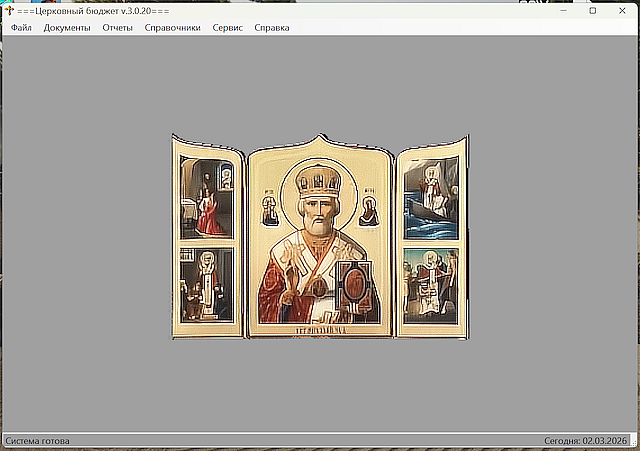

Содержание
- Работа с доходами
- Управление расходами
- Работа с документами
- Формирование отчетов
- Работа со справочниками
- Сервис

Рис. 1 - Главное окно программы
Статус: Загрузка...
Версия 2.0 (2025)

Рис. 1 - Главное окно программы
Перейдите в пункт меню 'Файл' - 'Новый'. В открывшемся диалоговом окне выберите 'Доходы'. В открытой форме нажмите 'Добавить услугу'. В ниспадающем списке выберите нужную, выставьте необходимую сумму. Если еще нужна услуга нажать еще раз на кнопку 'Добавить услугу', и так пока не заполниться необходимый список услуг. Затем нажать кнопку 'Сохранить' - данные сохраняться в таблицу БД. Если нужно сформировать новый документ - нажать на кнопку 'Новый документ', можно просмотреть сохраненный документ (Меню 'Документы' - 'Доходы'), откроется таблица Доходов. Выбрать нужный документ и открыть его для просмотра, или распечатать его.
Перейдите в пункт меню 'Файл' - 'Новый'. В открывшемся диалоговом окне выберите 'Расходы'. В открытой форме нажмите 'Добавить услугу'. В ниспадающем списке выберите нужную, выставьте необходимую сумму. Можно прикрепить копию чека о потраченной сумме. Если еще нужна услуга нажать еще раз на кнопку 'Добавить услугу', и так пока не заполниться необходимый список услуг. Затем нажать кнопку 'Сохранить' - данные сохраняться в таблицу БД. Если нужно сформировать новый документ - нажать на кнопку 'Новый документ', можно просмотреть сохраненный документ (Меню 'Документы' - 'Расходы'), откроется таблица Расходов. Выбрать нужный документ и открыть его для просмотра, также можно просмотреть чек потраченной суммы или распечатать документ.
Перейдите в меню Отчеты и выберите нужный отчет ...
Перейдите в меню Сервис → Восстановление из копии...